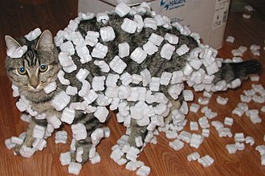

i made my website about this cat i had seen on a youtube video explaining that the wikipeadia page had a cat for the reference of static and I think this is hilarious because the cat looks so mildly inconvenienced yet completely powerless against the laws of physics. It shows even the animals considered predators have nothing against the laws of physics"